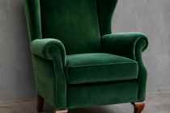
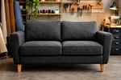

.: Zakład Tapicerski :.USŁUGI TAPICERSKIE * RENOWACJA MEBLI * ALEKSANDRÓW ŁÓDZKI I OKOLICE * TRADYCJA OD 1987 R. |
| STRONA GŁÓWNAO FIRMIEOFERTATAPICERKA MEBLOWARENOWACJATKANINYGALERIACENNIKKONTAKT |
.: MENU :.» strona główna » o firmie » oferta » galeria » cennik » kontakt.: AKTUALNOŚCI :.12.03.2011Uruchomiliśmy nową stronę internetową! Zapraszamy do zapoznania się z naszą ofertą. 03.01.2011 Szczęśliwego Nowego Roku życzy Zakład Tapicerski! .: LICZNIK :.0048213 |
.: Witamy na naszej stronie internetowej :. Witamy serdecznie na stronie internetowej naszego zakładu. Zakład Tapicerski istnieje na rynku nieprzerwanie od 1987 roku i od samego początku swojej działalności świadczy kompleksowe usługi tapicerskie dla klientów indywidualnych oraz firm z terenu Aleksandrowa Łódzkiego, Łodzi, Zgierza, Konstantynowa Łódzkiego i okolic. Dzięki wieloletniemu doświadczeniu oraz wykwalifikowanej kadrze jesteśmy w stanie sprostać nawet najbardziej wymagającym oczekiwaniom naszych klientów. W swojej pracy wykorzystujemy wyłącznie materiały najwyższej jakości pochodzące od renomowanych producentów. Naszym celem jest pełna satysfakcja klienta, dlatego do każdego zlecenia podchodzimy indywidualnie i wykonjemy je solidnie oraz terminowo. Oferujemy konkurencyjne ceny oraz fachowe doradztwo w zakresie doboru tkanin obiciowych.W naszej ofercie znajd± Państwo między innymi: tapicerowanie foteli, kanap, wersalek i narożników, wymianę sprężyn, pasów i g±bek, obicia krzeseł i taboretów, renowację mebli stylowych, a tak¿e szycie pokrowców. Zale¿y nam, aby ka¿dy mebel wygl±dał jak nowy. Zapraszamy do obejrzenia galerii naszych prac, w której prezentujemy wybrane realizacje z ostatnich lat. !!! PROMOCJA !!! Przy obiciu 6 krzeseł - siódme GRATIS !!! Promocja ważna do 30.06.2011 r.
 .: Dlaczego my? :.- wieloletnie doświadczenie- konkurencyjne ceny - krótkie terminy realizacji - fachowe doradztwo - transport mebli (do uzgodnienia) - szeroki wybór tkanin w siedzibie firmy Zadzwoń lub napisz - chętnie odpowiemy na wszystkie pytania! Dane teleadresowe znajdują się w zakładce KONTAKT. Zakład czynny od poniedziałku do piątku w godzinach 8.00 - 16.00, w soboty po wcześniejszym uzgodnieniu telefonicznym. Strona zoptymalizowana pod rozdzielczość 1024x768 oraz przeglądarkę Internet Explorer 7.0 lub nowszą. |